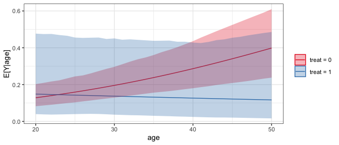

clarify implements simulation-based inference as an alternative to the delta method for computing functions of model parameters, such as average marginal effects.
Installation
You can install the development version of clarify from GitHub with:
# install.packages("devtools")
devtools::install_github("ngreifer/clarify")Introduction
Simulation-based inference is an alternative to the delta method and bootstrapping for performing inference on quantities that are functions of model parameters. The delta method involves multiple assumptions: 1) the regression coefficients are normally distributed, 2) the resulting quantity of interest is normally distributed, and 3) the first-order approximation to the variance of the desired estimator is equal to the true variance. When these assumptions are incorrect, which is especially likely when the quantity of interest is a complicated nonlinear function of the model coefficients, the resulting inferences can be inaccurate. Bootstrapping is one solution to this problem that does not require any of the above assumptions for valid nonparametric inference; however, it is computationally intensive since the original model needs to be fit many times, and any problems with the model that are only apparent in some bootstrap samples (e.g., failure to converge, perfect prediction) can make using bootstrapping challenging.
Simulation-based inference provides a compromise to these two methods: it is more accurate than the delta method because it does not require assumptions 2) and 3), and it is faster and more stable than bootstrapping because the model only needs to be fit once. Simulation-based inference involves simulating model coefficients from their multivariate distribution using their estimated values and covariance from a single model fit to the original data, computing the quantities of interest from each set of model coefficients, and then performing inference using the resulting distribution of the estimates as their sampling distribution. Confidence intervals can be computed using the percentiles of the resulting sampling distribution, and p-values can be computed by inverting the confidence intervals. Alternatively, if the resulting sampling distribution is normally distributed, its standard error can be estimated as the standard deviation of the estimates and normal-theory confidence intervals and p-values can be computed.
The clarify package was designed to provide a simple, general interface to simulation-based inference, along with a few convenience functions to perform common tasks like computing average marginal effects. The primary functions of clarify are sim(), sim_apply(), summary(), and plot(). These work together to create a simple workflow for simulation-based inference.
-
sim()simulates model parameters from a fitted model -
sim_apply()applies an estimator to the simulated coefficients, or to the original object but with the new coefficients inserted -
summary()produces confidence intervals and p-values for the resulting estimates -
plot()produces plots of the simulated sampling distribution of the resulting estimates
There are also some wrappers for sim_apply() for performing some common operations: sim_ame() computes the average marginal effect of a variable, mirroring marginaleffects::comparisons() and marginaleffects::marginaleffects(); and sim_setx() computes predicted values at typical values of the covariates and differences between them, mirroring Zelig::setx() and Zelig::setx1().
Example
Below is an example of performing g-computation for the ATT after logistic regression to compute the marginal log risk ratio and its confidence interval:
library(clarify)
data("lalonde", package = "MatchIt")
#Fit the model
fit <- glm(I(re78 == 0) ~ treat * (age + educ + race + married + nodegree + re74 + re75),
data = lalonde, family = binomial)
#Simulate coefficients from a multivariate normal distribution
set.seed(123)
sim_coefs <- sim(fit)
#Apply a function that estimate the g-computation estimate for the ATT
#to models with the estimated coefficients replaced by the simulated ones
sim_est <- sim_apply(sim_coefs, function(fit) {
d <- subset(lalonde, treat == 1)
d$treat <- 1
p1 <- mean(predict(fit, newdata = d, type = "response"))
d$treat <- 0
p0 <- mean(predict(fit, newdata = d, type = "response"))
c(`E[Y(0)]` = p0, `E[Y(1)]` = p1, `log(RR)` = log(p1 / p0))
}, verbose = FALSE)
sim_est
#> A `simbased_est` object (from `sim_apply()`)
#> - 1000 simulated values
#> - 3 quantities estimated:
#> E[Y(0)] 0.2944381
#> E[Y(1)] 0.2432432
#> log(RR) -0.1910068
#View the estimates, confidence intervals, and p-values
summary(sim_est, null = c(NA, NA, 0))
#> Estimate 2.5 % 97.5 % P-value
#> E[Y(0)] 0.294 0.220 0.384 .
#> E[Y(1)] 0.243 0.199 0.360 .
#> log(RR) -0.191 -0.479 0.330 0.79
#Plot the resulting sampling distributions
plot(sim_est)
clarify provides a shortcut for computing average marginal effects and comparisons between average adjusted predictions, sim_ame(), which is essentially a wrapper for sim_apply() with extra processing. We can compute the log marginal risk ratio below:
# Marginal risk ratio ATT, simulation-based
sim_est <- sim_ame(sim_coefs, var = "treat", subset = treat == 1,
contrast = "log(RR)", verbose = FALSE)
sim_est
#> A `simbased_est` object (from `sim_ame()`)
#> - Average marginal effect of `treat`
#> - 1000 simulated values
#> - 3 quantities estimated:
#> E[Y(0)] 0.2944381
#> E[Y(1)] 0.2432432
#> log(RR) -0.1910068
summary(sim_est, null = c(NA, NA, 0))
#> Estimate 2.5 % 97.5 % P-value
#> E[Y(0)] 0.294 0.220 0.384 .
#> E[Y(1)] 0.243 0.199 0.360 .
#> log(RR) -0.191 -0.479 0.330 0.79We could have used marginaleffects, which uses the delta method instead:
# Marginal risk ratio ATT, delta method-based
marginaleffects::comparisons(fit, variables = list(treat = 0:1),
newdata = subset(lalonde, treat == 1),
transform_pre = "lnratioavg") |>
summary()
#> Term Contrast Effect Std. Error z value Pr(>|z|) 2.5 % 97.5 %
#> 1 treat ln(mean(1) / mean(0)) -0.191 0.1925 -0.992 0.32119 -0.5684 0.1864
#>
#> Model type: glm
#> Prediction type: responseThe plot of the simulated sampling distribution indicates that the sampling distribution for the log risk ratio is not normally distributed around the estimate, indicating that the delta method may be a poor approximation and the asymmetric confidence intervals produced using the simulation may be more valid.
If we want to compute the marginal risk ratio, we can do that using transform() on the already-produced output:
#Transform estimates into new quantities of interest
sim_est <- transform(sim_est, `RR` = exp(`log(RR)`))
summary(sim_est, null = c(NA, NA, 0, 1))
#> Estimate 2.5 % 97.5 % P-value
#> E[Y(0)] 0.294 0.220 0.384 .
#> E[Y(1)] 0.243 0.199 0.360 .
#> log(RR) -0.191 -0.479 0.330 0.79
#> RR 0.826 0.619 1.391 0.79We can also use clarify to compute predictions and first differences at set and typical values of the predictors, mimicking the functionality of Zelig’s setx() and setx1() functions, using sim_setx():
# Predictions across age and treat at typical values
# of the other predictors
sim_est <- sim_setx(sim_coefs, x = list(age = 20:50, treat = 0:1),
verbose = FALSE)
#Plot of predicted values across age for each value of treat
plot(sim_est)
clarify offers parallel processing for all estimation functions to speed up computation.
The methodology of simulation-based inference is described in King, Tomz, and Wittenberg (2000).
King, G., Tomz, M., & Wittenberg, J. (2000). Making the Most of Statistical Analyses: Improving Interpretation and Presentation. American Journal of Political Science, 44(2), 347–361. https://doi.org/10.2307/2669316